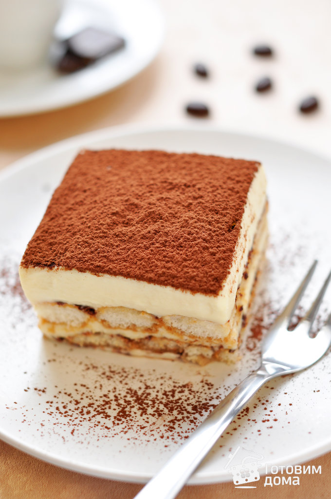

Мы специализируемся на розничной продаже и доставке на заказ выпечки, пирогов, кондитерских изделий, свежих салатов и напитков собственного производства. В основе нашего ассортимента недорогие изделия массового спроса, но уровень профессионального мастерства наших кондитеров позволяет выполнять самые сложные и оригинальные заказы. Мы работаем исключительно на натуральном сырье, без применения полуфабрикатов.
Качество всех пирогов, кондитерских и хлебобулочных изделий, салатов и напитков подтверждено сертификатами. Каждому покупателю мы гарантируем 100% соответствие продукции заявленной рецептуре.
У нас есть не только онлайн-доставки. Наши покупатели могут приобрести готовую продукцию или сделать заказ в стационарных торговых точках:
Название |
Рецепт |
Фото |
|---|---|---|
| Тирамису Заказать |
Сегодня готовим дома очень вкусный знаменитый итальянский десерт Тирамису по многократно проверенному рецепту - воздушный, как облако! Без сырых яиц, с сыром маскарпоне, взбитыми сливками, ликером Бейлис, кофейной пропиткой и, конечно же, бисквитным печеньем савоярди! Этот Итальянский десерт не оставит вас равнодушными, и точно поднимет настроение! Мягкий, пропитанный кофе бисквит (савоярди) тает во рту вместе с нежнейшим кремом! Теперь настоящий классический Тирамису, и даже лучше (так как без сырых яиц), можно легко приготовить в домашних условиях! Рецепт |
 |
| Шоколадный торт с малиновым и лимонным кремом |
Хочу поделиться с вами рецептом, на мой взгляд, несложного, но очень вкусного и нежного тортика. Рецепт получился сборный после многих экспериментов с бисквитами и кремами. Рецепт |
image |
| Шоколадный торт | ||
| cake | recipe | image |
| cake | recipe | image |
| recipe | ||
Новинки!!! |
||
| cake | recipe | image |
| cake | recipe | image |